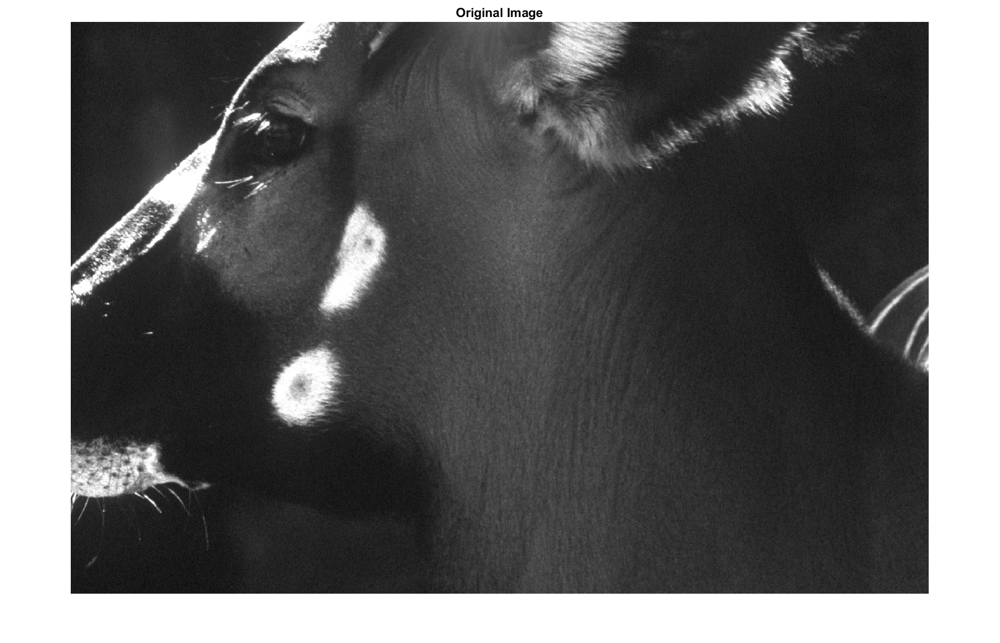
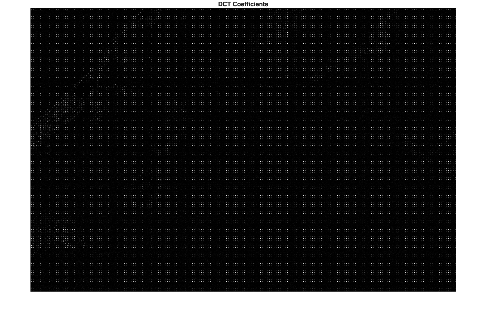
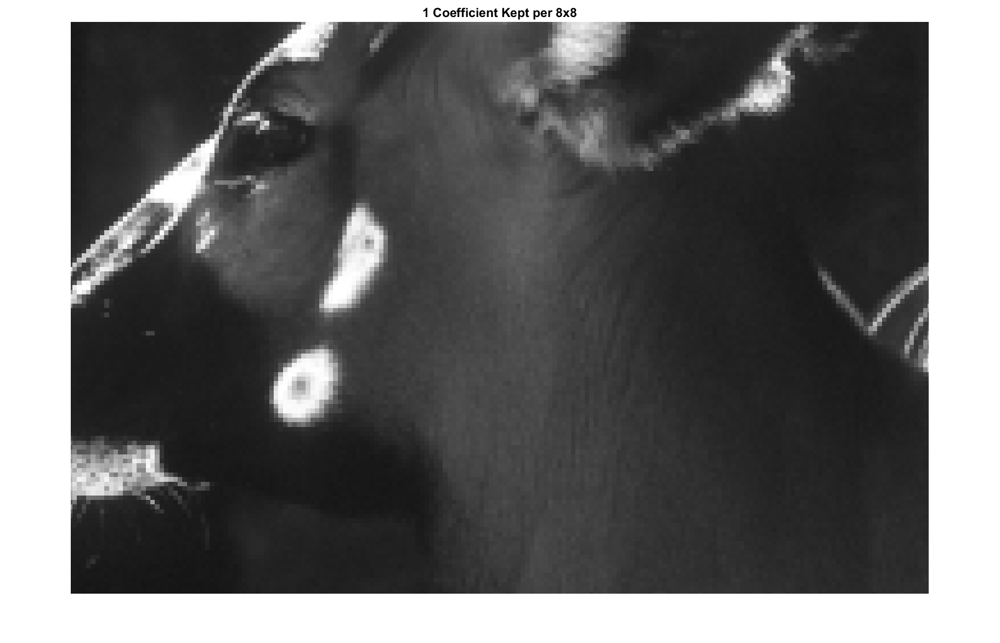

Project Overview
Digital images require significant storage space and network bandwidth, making efficient compression essential for modern applications such as websites, mobile devices, streaming platforms, and cloud storage. The goal of this project was to design and evaluate a custom image compression codec capable of reducing file size while preserving perceptual image quality.
By combining classical DSP tools with modern coding strategies, we created and benchmarked several compression pipelines against existing standards such as JPEG. Performance was evaluated using compression ratio, bits per pixel, PSNR, SSIM, runtime, and visual reconstruction quality.
Methods
Our project explored multiple image compression techniques that combine transform coding, predictive coding, dimensionality reduction, and entropy encoding.
1. Discrete Cosine Transform (DCT)
The Discrete Cosine Transform was one of the primary methods used in this project. Images were divided into 8×8 blocks, and each block was transformed from the spatial domain into the frequency domain. This concentrates most of the image energy into a small number of low-frequency coefficients. High-frequency coefficients, which are less noticeable to the human eye, can then be reduced or removed for compression. This same principle is widely used in JPEG compression.
2. Quantization
Quantization reduces the precision of transformed coefficients after the DCT stage. Smaller high-frequency values are rounded or discarded, significantly lowering the amount of data that must be stored. This process is one of the main reasons lossy compression can achieve high compression ratios.
3. Singular Value Decomposition (SVD)
As an alternative compression strategy, we implemented Singular Value Decomposition. SVD factorizes the image matrix into three matrices and allows reconstruction using only the largest singular values. By keeping only the most significant components, the image can be approximated with reduced storage requirements while preserving major image structure.
4. Principal Component Analysis (PCA)
PCA was explored as another dimensionality-reduction method closely related to SVD. PCA compresses data by projecting images onto the most informative principal components and discarding less significant variation.
5. Huffman Encoding
Huffman coding was implemented as a lossless entropy encoder. Frequently occurring symbols were assigned shorter binary codes, while rare symbols received longer codes. This reduced the average number of bits required to store transformed image data.
6. Arithmetic Encoding
Arithmetic coding was also explored as a higher-efficiency entropy coding method. Instead of assigning fixed symbol codes, it encodes an entire message into a fractional interval based on symbol probabilities. This can outperform Huffman coding at the cost of higher computational complexity.
7. Asymmetric Numeral Systems (ANS)
ANS coding was tested as a modern alternative to arithmetic coding. It achieves strong compression efficiency while maintaining faster execution speeds, making it useful in practical high-performance codecs.
8. Run-Length Encoding (RLE)
Run-Length Encoding was included to compress repeated sequences of values, especially long runs of zeros created after quantization. This method is commonly used as a preprocessing stage before entropy coding.
9. Differential Pulse Code Modulation (DPCM)
DPCM was explored as a predictive coding method. Instead of storing raw values directly, it stores differences between neighboring pixels or coefficients. Since nearby image values are often highly correlated, these differences are smaller and easier to encode efficiently.
10. Hybrid Compression Pipelines
The strongest overall results were obtained by combining multiple techniques into hybrid pipelines, such as DCT followed by quantization and entropy coding. These systems remove redundancy in multiple stages and typically outperform any single standalone method.
11. Performance Evaluation
Because image compression requires balancing size and quality, performance was evaluated using storage ratio, file size reduction, SSIM, PSNR, and side-by-side visual comparisons between original and reconstructed images.
Project progress & Challenges
Direction and Dataset
We are specifically looking at making a lossy image compression algorithm because there are more techniques to employ as we try to compress our image smaller. We chose images because they are visual and would look nice on a portfolio website without the additional overhead of adding sound players. We may branch out to video compression if we have the time.
For our dataset, we looked at the imagecompression.info website; their test images may be a good starting point for getting our algorithm up and running. We also found an additional github repository with more lossless images from a Kodak camera that can be worked on if needed.
Compression Techniques Explored
Through research, we found the Discrete Cosine Transform (DCT) and Singular Value Decomposition (SVD) as two potential techniques we can employ. The DCT uses only real numbers and removes visually insignificant high frequency information. Alternatively, SVD breaks the image into essential components by denoising and keeping only the most significant signal value, allowing for the removal of redundant data.
Challenges & Hurdles
Challenge: When initially extracting the 8x8 blocks to process the image, we tried using standard nested for loops. This was incredibly slow and caused a massive computational bottleneck in MATLAB when dealing with higher resolution images.
Solution: To overcome this hurdle, we are exploring MATLAB's built-in block-processing functions and vectorization techniques to perform the mathematical transforms across the entire matrix simultaneously rather than pixel-by-pixel.
Data Visualizations
Below are plots demonstrating the core aspects of our signal processing pipeline.

1. Original Image (Spatial Domain)
This plot displays our baseline test image in grayscale. We loaded this dataset into MATLAB to serve as the visual reference point before applying our mathematical transforms.

2. 2D DCT of 8x8 Blocks (Frequency Domain)
This plot shows our image processed through a 2D DCT in 8x8 blocks. We generated this by applying the transform to shift the spatial data into frequencies. The 2D DCT highlighted central parts where there was more homogenous coloring. The darker edges of the blocks indicate areas where there were sharper edges.

3. Keeping One DCT Coefficient
This plot displays the DCT compression when we keep one coefficient. If you look closely, the compressed image contains less detail than the original. The original image has a file size of 1165.97 KB while the compressed image has a file size of 171.12 KB. The compressed image is about 15% the size of the original image with only a minor decrease in quality.
Next steps (3-week plan)
Our plan for finalizing the algorithm and evaluating its performance:
What we learned
MATLAB's dctmtx() and blockproc()
While working with our image data, we learned how to utilize MATLAB's dctmtx() command to compute the 2-dimensional Discrete Cosine Transform, as well as exploring blockproc() to apply functions efficiently.
Why it's relevant: Using dctmtx() allowed us to easily shift our image data into the frequency domain. Seeing the output of this command directly verified our research: lower frequencies carry most of the image's energy. Because the human eye is not the best at identifying high frequencies, this MATLAB output proved that our core strategy—removing high-frequency components to save data—will successfully compress the image without ruining the visual energy. Furthermore, tools like blockproc() are essential for applying these transforms efficiently without slowing down our script.